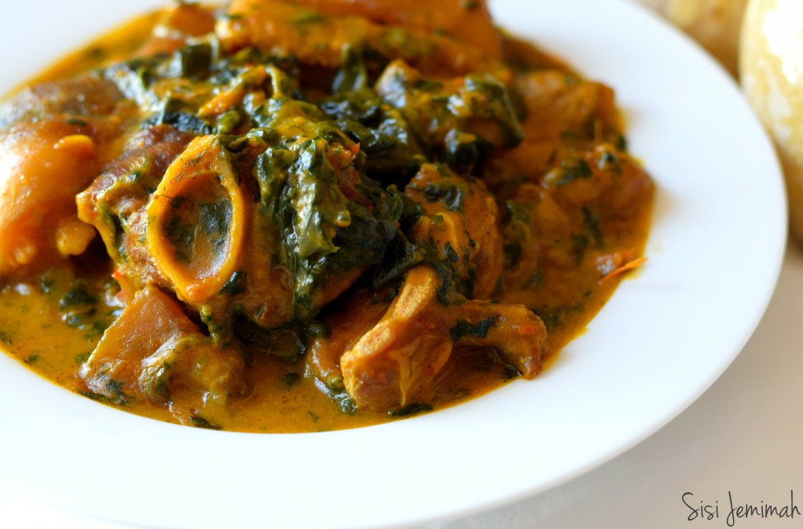

Bitter Leaf Soup

Bitter Leaf - Ofe Onugbu
Ingredients
- Assorted meats (Beef, goat meat, Ponmo, Shaki are ideal)
- 2 Cooking Spoon Palm oil
- 1 Cup Bitter leaves (Fresh or Dried)
- 3-4 Medium Size Cocoyam (Ede)
- 2 Smoked Fish (Optional)r
- 2-3 Stockfish (Optional)
- 3 Tablespoons Ground Crayfish
- 1 Tablespoon Ogiri Okpei
- 3 Tablespoons Ground Dry pepper or 2 Scotch Bonnet blended
- 2 Bouillon Cubes
- Salt to taste
Steps
- Start by boiling your meats, start with the tougher meats like Cow leg and Shaki first. When they’re slightly tender, add beef or other softer meats. When all the meats are tender, add the Stockfish, leave to cook till soft
- ADo not add Onions, Curry or Thyme!
- While the meats are boiling, boil the Cocoyam with the skin on. Do not add salt, boil till tender, this should take roughly 20 minutes on medium heat…
- When they are soft, gently peel the skin off and pound till smooth in a mortar. Alternatively, chop them into small chunks and purée in your electric blender or food processor till smooth, then set aside
- Wash the Bitter leaves with hot water to get rid of as much bitterness as you can. There should be almost no hint of bitterness left in the leaves after washing.
Tip: If you find yourself struggling to get rid of the bitterness, simply boil the leaves with enough water for 15 times, then rinse with cold water.
- If you’re using dried Bitter leaves, you’ll need to soak in warm water to plump it up and also get rid of dirt…
- When the Meats and Fish are all soft, add Crayfish, smoked Prawns, then add the ground or blended pepper. Stir and combine
- Add Palm oil, leave to thoroughly combine for 3-4 minutes….
- Now, turn the heat done to low, add the blended Cocoyam into the stock in small dollops, be careful not to add too much. The consistency should be semi fluid…..
- The Cocoyam will dissolve; thickening the soul, leave to dissolve and combine for 2-3 minutes.
The thickness will depend on your preference. Ofe Onugbu is light and semi fluid though some role prefer it thick and creamy. I like mine Somewhat in between.
- Then add the Ogiri, stir and combine. Taste for seasoning and adjust if necessary….
- Then add the washed Bitter Leaves, leave to cook for 2-3 minutes. Do not over cook your vegetables…
- Then its done. Serve with swallow
Bitter Leaf Soup, also known as Ofe Onugbu is a popular Nigerian soup. Bitter leaf Soup is peculiar to the Igbo tribe of Eastern Nigeria. A lot of non-Igbos shy away from bitter leaf soup (Well, I did for the longest time) because they think that, true to it’s name, it is a very bitter soup. But they can’t be more wrong; Ofe Onugbu does not taste bitter in the slightest. The leaves have to be thoroughly washed to get rid of the bitterness before it's added to the soup.